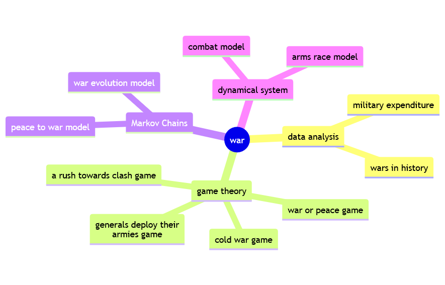

on war
a mathematical and computational perspective

“No one starts a war, or rather, no one in his sense ought to do so–without first being clear in his mind what he intends to achieve by the war and how he intends to conduct it.”
Carl Von Clausewitz
preface
War is a complex issue that deserves respect, especially when war is so close and so raging. But respecting something doesn’t mean you can’t reason about it.
Maybe it’s exactly the opposite.
War in particular seems to require a suspension of human reasoning faculties. You have to be on one side or the other. A third position is not foreseen. When the options are limited, also human reasoning capacity and consequently the ability to find solutions is also limited.
Yet sometimes the best resources and the brightest solutions are found in extreme conditions.
The motivation of this essay lies in the need to try to oppose reasoning to the rhetoric of war. And reasoning in this era includes mathematical modeling and computational thinking. These are the two pillars of the current paradigm of science. It’s easy to think of physics and engineering, but economics and finance can be seen as a repackaging of applied mathematics. Surely biology and epidemiology also make extensive use of quantitative methods. Why can’t philosophy of war benefit from a mathematical and computational approach?
thinking about war
The need to think about war is evidenced in the history of world religion, philosophy and literature. Below are two outstanding examples in Western and one in Eastern culture.
Carl Von Clausewitz’s On War (Vom Kriege 1832) is undoubtedly the most influential Western treatise on the subject of war. Von Clausewitz denies that war is a purely military phenomenon and his famous axiom “war is the continuation of politics by other means” has conditioned the thinking of generations of generals and politicians providing the tools to understand the phenomenon of war. For him war is “an act of violence to impose our will on the adversary”. War is “a game of interactions” between uncertainty, friction, randomness. It is an act of political intelligence, calculation of probabilities and willingness to take risks.
Lev Nikolayevich Tolstoj’s novel War and Peace (1829) contains digressions on the philosophy of warfare that directly influenced Gandhi’s Hinduism-centered philosophy of nonviolent resistance. The second epilogue of the novel is then a real essay of critical philosophy of history in which Tolstoy explores the question of the relationship between ‘necessity’ and ‘freedom’ in the historical actions of men. Tolstoj condemns historians who believe that “peoples are led by individuals” and that “there is a certain goal towards which peoples and humanity are moving.”
Tolstoj briefly explains his ethical position saying: “War is so unjust and ugly that those who fight in it have to try to drown out the voice of conscience within themselves.”
In Eastern culture, Sun Tzu’s The Art of War (roughly 5th century BC) is the most influential essay. It is an exhaustive treatise about warfare strategies and tactics articulated in 13 chapters: laying plans, waging war, attack by stratagem, tactical disposition, use of energy, weak point and strong, maneuvering an army, variation of tactics, the army on the march, classification of terrain, the nine situations, attack by fire, use of spies.
According to Sun Tzu “The art of war is of vital importance to the State.It is a matter of life and death, a road either to safety or to ruin. Hence it is a subject of inquiry which can on no account be neglected.”
about this essay
The reader need not be frightened: in the following few chapters there is nothing so profound and inspiring but also intimidating as Clausewitz treaty or the Tolstoy masterpiece. The reader won’t even find war stories or historical anecdotes.
This is a short essay on war that aims to introduce in a concise but clear way some mathematical and computational approaches to the analysis of war. The reader will therefore not find the precision of the mathematical formulation nor the details of the calculation algorithms. Some resources are listed in the boxes exploring further to deepen the mathematical or computational aspects.
The intent is to provide the reader with some interpretations and suggest food for thought. As always in the experience of reading an essay, half of the work can be done by the author but the other half must be done by the reader: nothing has value if you don’t strive for it.
The essay is articulated according to the following mind map.

The first part, War Trends, applies exploratory data analysis to public data about wars in history and country military spending in contemporary age.
The second part, Games of War, analyzes the strategic interactions between enemies through the framework of game theory. Four strategic games are therefore studied: war or peace; generals deploy their armies; cold war and rush to clash.
The third part uses Markov processes to analyze the probabilities related to war with the following models:
a two states model representing peace / war probabilities for a country;
a four states model representing the evolution of war probabilities.
Finally, the fourth part of the essay models both the arms race and the dynamics of a combat using differential equations adapting models from literature: Richardson arms race model and Lanchester combat model.
All of the calculations needed for the essay are done with R, a programming language for statistical computing and graphics, and its gorgeous ecosystem. Some hints on the R programs developed for this essay are given in the collapsed box computation with R at the end of each chapter. The essay itself is written with Quarto, an open-source scientific and technical publishing system.
feedback
Comments, suggestions, and critiques are most welcome, including ideas for further enhancement and examples that could be added to this online resource. Feedback can be emailed to the author.
If you find reading this essay valuable please support the author buying one or more virtual coffees for him!
acknowledgements
The author takes this opportunity to express his gratitude to all who made this essay possible.
The author, who is currently unaffiliated with any academic institution, greatly appreciates freely available scientific resources and open source initiatives.
The author also feels the need to thank his wife for putting up with him and his nerdy personality.
Last but not least, a special thanks goes to the hunger for understanding that is in human nature and therefore also within the author himself.
license
This short essay is licensed to you under Creative Commons Attribution-NonCommercial-ShareAlike 4.0 International CC BY-NC-SA 4.0.
For attribution, please cite this work as:
Mario De Toma, 2023. “On War: a mathematical and computational perspective”
June 30, 2023. https://mdt-ds.github.io/on_war